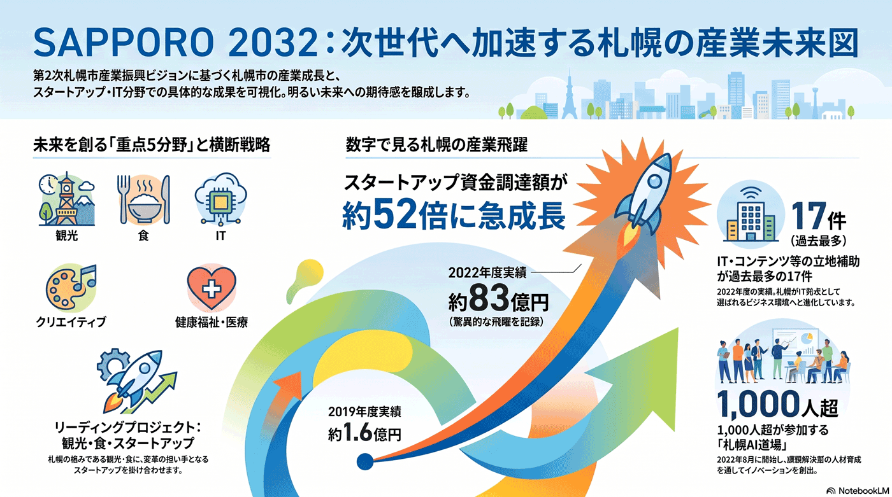

第2次札幌市産業振興ビジョン（産業政策の指針）
産業政策の10年指針。観光・食・IT・クリエイティブ・健康福祉/医療の重点5分野と、スタートアップを軸にした横断戦略を定める。すでにSTARTUP CITY SAPPORO・札幌AI道場など多くの事業が動いている。

背景
第2次札幌市産業振興ビジョンは令和5年度（2023年度）から令和14年度（2032年度）の10年間が対象で、施策編は2023〜2027年度の5年間。重点分野として「観光」「食」「IT」「クリエイティブ」「健康福祉・医療」を位置づけ、横断的戦略として「持続可能な札幌経済の構築」を掲げる。産業・雇用に関する課題の多くがこの枠組みに連なる。
主要データ
| 対象期間 | 2023〜2032年度（施策編は2023〜2027年度） |
|---|---|
| 重点5分野 | 観光／食／IT／クリエイティブ／健康福祉・医療 |
| リーディングプロジェクト | 「観光」「食」と、横断的な担い手としての「スタートアップ」 |
| スタートアップ資金調達 | 道内 2019年度 約1.6億円 → 2022年度 約83億円 |
| IT・コンテンツ等の立地補助 | 2022年度 17件（過去最多） |
| 札幌AI道場の育成 | 2022年8月開始、延べ1,000人超が参加 |
事実
- 第2次札幌市産業振興ビジョンは2023〜2032年度を対象とし、重点分野に観光・食・IT・クリエイティブ・健康福祉/医療を据え、横断戦略として「持続可能な札幌経済の構築」を掲げている。
- 「観光」「食」と、イノベーションの担い手となる「スタートアップ」をリーディングプロジェクトに位置づけている。
- スタートアップ分野では、札幌市が2019年に開始した「STARTUP CITY SAPPORO」を基盤に、2023年に札幌市・北海道・北海道経済産業局による「STARTUP HOKKAIDO実行委員会」を設立し、オール北海道の支援体制を整えた。
- 「J-Startup HOKKAIDO」（有望スタートアップの選定・集中支援）、「Local Innovation Challenge HOKKAIDO」（5年で40件超の実証を採択）など、具体的な支援プログラムが進行している。
- IT・AI分野では、さっぽろ産業振興財団が事務局を担う「SAPPORO AI LAB」のもと、課題解決型の人材育成「札幌AI道場」（2022年8月開始、延べ1,000人超）やE資格チャレンジ、JDLAと共催の「Sapporo AI Connect」などを実施している。
- 補助制度として、デジタル・イノベーション創出補助金、展示会出展支援補助金、IT・コンテンツ・バイオ立地促進補助金などが運用され、IT・コンテンツ等の立地補助は2022年度に17件で過去最多となった。
- クリエイティブ分野ではデザイン経営の体験プログラムや映像制作・人材育成、創造性を扱うイベント「No Maps」との連携が、健康福祉・医療分野では「サッポロ・ヘルスケアビジネス・サポートプログラム」やMICE誘致が動いている。
解釈
若者の流出・観光依存・IT人材といった個別の産業課題は、このビジョンの重点分野・横断戦略の中で扱われる。すでに数多くの事業が走っており、課題地図は『計画が掲げた目標』と『実際に動いている事業の成果』を突き合わせて点検する材料になる。とくにスタートアップ資金調達が3年で約1.6億円から約83億円へ伸びたように、定量的な変化が現れ始めた分野もある。
提案
- 重点分野ごとのKPIと、雇用の質（正規化・賃金）の指標を結びつけて点検する。
- 観光偏重を是正する産業多角化の進捗を、立地補助件数・資金調達額・新規創業数などの実績で管理する。
- STARTUP CITY SAPPORO／AI道場など既存事業の成果を一覧化し、ビジョンの重点分野との対応づけを継続的に公開する。
深掘り — 市民の声と答え
ビジョンの重点分野で、実際に動いている事業は？
スタートアップでは、2019年開始の「STARTUP CITY SAPPORO」を土台に、2023年設立の「STARTUP HOKKAIDO実行委員会」（札幌市・北海道・北海道経済産業局）が司令塔となり、「J-Startup HOKKAIDO」や5年で40件超を採択した「Local Innovation Challenge HOKKAIDO」が進む。IT・AIでは、さっぽろ産業振興財団が事務局の「SAPPORO AI LAB」を中心に「札幌AI道場」（延べ1,000人超）やE資格チャレンジ、JDLA共催の「Sapporo AI Connect」を実施。クリエイティブは「No Maps」やデザイン経営・映像人材育成、健康福祉・医療は「サッポロ・ヘルスケアビジネス・サポートプログラム」、観光・食はMICE誘致や食関連支援が動いている。
成果は数字で見えている？
道内スタートアップの資金調達額は2019年度の約1.6億円から2022年度には約83億円へと大きく伸び、農業・宇宙・AIなど多様な分野に資金が集まり始めた。IT・コンテンツ・バイオの立地補助は2022年度に17件で過去最多。札幌AI道場は2022年8月の開始以来、延べ1,000人超の人材育成と、協業・起業の創出につながっている。いずれも札幌市・北海道・財団・経産局などが連携した成果で、ビジョンの重点分野が実体を伴いつつあることを示す。
このビジョンから生まれた、札幌市が関与・後援している事業には何がある？（推定を含む）
以下は、ビジョンの重点分野・横断戦略と連動して走る取組を、AIが推定的に紐づけたものです（各事業の予算根拠を一件ずつ照合したものではありません）。スタートアップ＝STARTUP CITY SAPPORO、STARTUP HOKKAIDO、J-Startup HOKKAIDO、Local Innovation Challenge HOKKAIDO、運営パートナーのD2Garage。IT・クリエイティブ＝SAPPORO AI LAB／札幌AI道場、Sapporo AI Connect、No Maps、各種立地・開発補助金、札幌市IoTイノベーション推進コンソーシアム。健康福祉・医療＝サッポロ・ヘルスケアビジネス・サポートプログラム。観光・食＝MICE誘致・支援制度や食関連産業支援。これらは札幌市が主催・共催・後援・補助のいずれかで関与しており、ビジョンが掲げる『重点5分野＋スタートアップ横断戦略』の実装層にあたると考えられる。
検討体制・メンバー
札幌市経済観光局が策定・推進を担う。経済界、重点分野の事業者、有識者、スタートアップ・大学と連携して進める。
AIノート
AIの貢献度は中。産業統計・求人データの分析で重点分野の成長や雇用の質をモニタリングできるほか、本ページの『推定で紐づけた事業』のように、計画文書と実際の事業群を突き合わせて対応関係を可視化する作業もAIが補助しやすい。さらにAI自体が重点分野（IT・クリエイティブ）の成長ドライバにもなりうる。